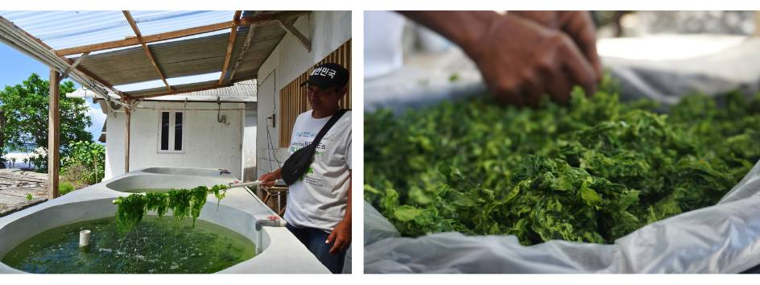
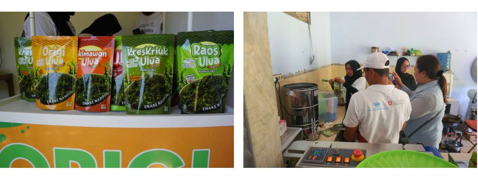
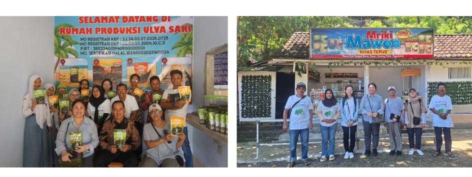

Empowering Coastal Communities through Ulva Value Chain Development in Gunungkidul, Yogyakarta

Yogyakarta (12/25), Efforts to strengthen the Ulva seaweed value chain in Gunungkidul continue to show promising results as the collaboration between GQSP Indonesia and PT. Winner Perkasa Indonesia Unggul (WPIU) moves forward. Launched in Mei 2024, the initiative has delivered significant benefits to local communities, particularly in strengthening livelihoods and accelerating local community empowerment.
The project has successfully enhanced technical skills among coastal communities, enabling them to diversify Ulva products and expand market opportunities. These advancements have generated positive socio-economic impacts, especially for women and small-scale producers who are now more actively involved in the value chain.
Significant effort has been made to improve the results of Ulva farming. During the ongoing farming activities at Rumah Belajar Usaha (RBU) or the Entrepreneurship Learning Hub, UV treatment is used in the water reservoir in addition to the existing filtration system to minimize the risk of pest and disease outbreaks. The application of seaweed-based bio-stimulants has further improved growth performance and achieved a bright green coloration demanded by the market. The harvested Ulva is now being supplied to the cosmetics industry, as it has a lower risk of heavy metal contamination compared to wild-harvested Ulva.

The project has also expanded its processing facilities from RBU Pantai Pok Tunggal Barat to the neighboring village of Cingkrang, recognizing the potential of Ulva Chips as a new product to boost community livelihoods. During discussions, both the Head of Village and the Head of the Tourist Village of Cingkrang expressed strong support for the development and appreciated UNIDO’s initiative. They committed to sustaining and expanding the project, linking Ulva development with tourism growth and long-term development.

One of the most notable impacts has been on women’s empowerment where they previously relied on seasonal tourism or domestic roles have now gained stable livelihoods, technical expertise, and entrepreneurial skills. Training in production, quality control, and management has not only improved individual lives but also positively impacted family dynamics. Increased income has eased household burdens, strengthened confidence, and fostered greater well-being within communities.
The project has demonstrated how innovation, technical capacity building, and community engagement can improve local livelihoods and achieve sustainable development. Through technical support for farming practices, standardized production and packaging, diversification of product lines, and the establishment of processing facilities, the initiative has enhanced economic opportunities and created sustainable pathways for long-term development. Most importantly, the empowerment of women and small-scale producers proves that inclusive approaches can deliver lasting socio-economic benefits.
